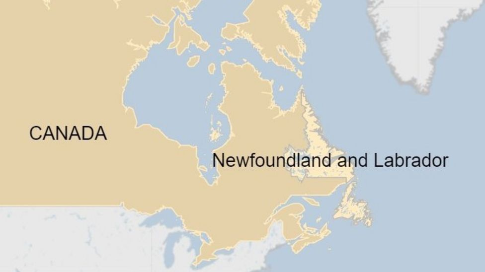

Ukraine's Eurovision
singer Alina Pash suspended.
Click the image to see the whole Story
The Queen has carried out
her first official engagements
since a Covid-19 scare
for the Royal family.
Click the image to see the whole Story
Matt Hancock failed to comply
with equality duty over Dido
Harding appointment, High
Court rules
Click the image to see the whole Story
Covid deaths in UK continue
to fall.
Click the image to see the whole Story
UK wage growth lags
rising cost of living.
Click the image to see the whole Story

Four dead and 15 missing
as Spanish trawler sinks
off Canada.
Click the image to see the whole Story